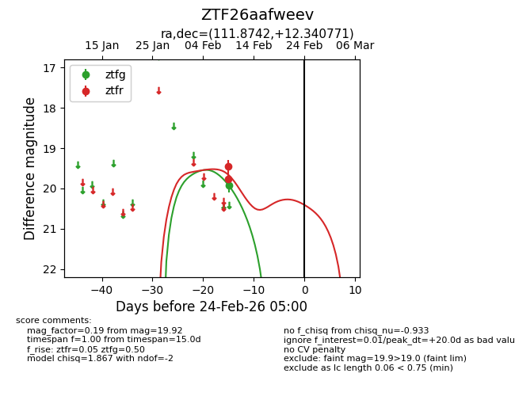
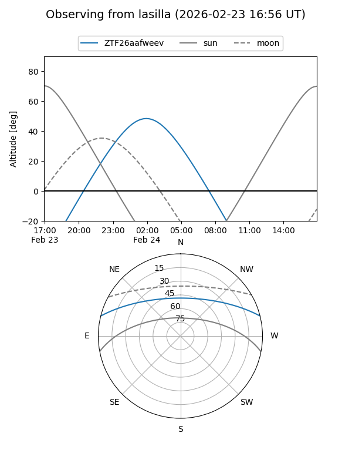
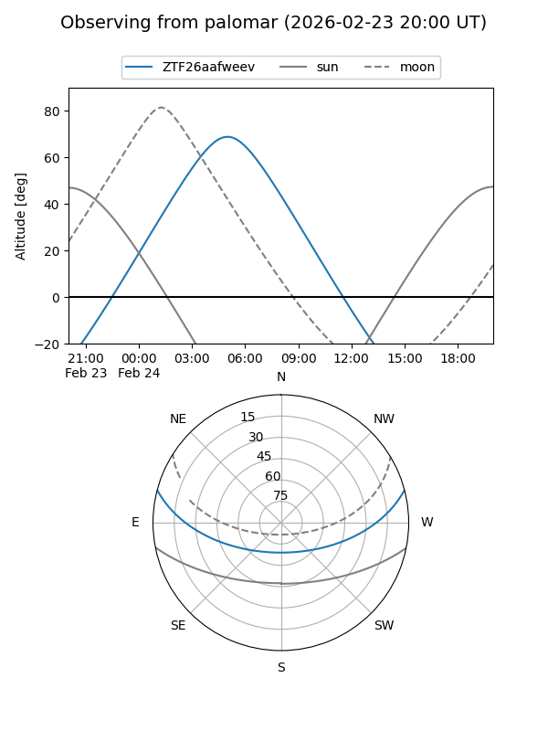

ZTF26aafweev
Target ZTF26aafweev at 2026-02-24 09:08
Aliases and brokers:
FINK: link
Lasair: link
ALeRCE: link
alt names
ZTF26aafweev (ztf,fink_ztf)
Coordinates:
equatorial (ra, dec) = 111.8742,+12.34077
equatorial (HMS+DMS) = 07:27:29.82,+12:20:26.78
galactic (l, b) = (205.8178,+13.51408)
Flags:
Photometry:
last ztfg=19.92, ztfr=19.76
1 ztfg, 2 ztfr detections
Lightcurve

Visibility


Additional plots